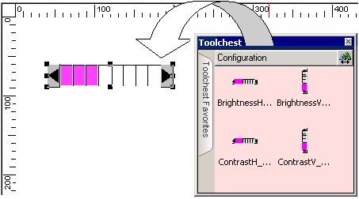

|
|
|
|
|
|
|
|
You can adjust the target's brightness and contrast settings by changing the values of the _Brightness and _Contrast system variables. Brightness and Contrast settings are stored in SRAM so that a target's display settings are retained if the target is shut down and restarted.

If you write a value to the _Brightness or _Contrast system variables that exceeds their input range, the value is ignored and the target's display settings will not change.
If a target machine has both Auto Brightness and Manual Brightness modes available, the read/write capability of the _Brightness variable applies in the Manual Brightness mode only. In Auto Brightness mode, the _Brightness variable does not change to reflect the current luminosity, and a brightness value cannot be written to the variable.
Method |
Description |
Configuration Menu |
Use the target's configuration menu to adjust the brightness and contrast settings. See Section 26.4.7, Setting Up Brightness and Contrast. |
Brightness and Contrast Parts |
Brightness and Contrast parts have been provided in the Toolchest to adjust a target's brightness and contrast settings. See Section 20.4.1, Adjusting Brightness and Contrast using Brightness and Contrast parts. |
Equipment |
Use programs on Equipment that adjust the target's brightness and contrast settings by writing to the _Brightness and _Contrast system variables. See Section 20.4.3, Adjusting Brightness and Contrast from Equipment. |
Scripts |
Write scripts that adjust the target's brightness and contrast settings by writing to the _Brightness and _Contrast system variables. See Section 20.4.4, Adjusting Brightness and Contrast using Scripts. |
Animation |
Create touch animation that adjusts the target's brightness and contrast settings by writing to the _Brightness and _Contrast system variables. See Section 9.2.7, Creating a Custom Switch. |
Numeric Displays |
Create numeric displays that adjust the target machine's brightness and contrast settings by writing to the _Brightness and _Contrast system variables. See Section 11.1, Overview. |
Switches |
Create switches that adjust the target machine's brightness and contrast settings by writing to the _Brightness and _Contrast system variables. See Section 9.2, Creating Switches. |
The Brightness and Contrast Toolchest parts write directly to the _Brightness and _Contrast system variables. During run time, touch the arrows to increase or decrease a target's brightness or contrast.
Drag the Brightness or Contrast part from the Toolchest's Configuration folder and drop it onto a panel.

Download the project to the target machine.
During run time, touch the arrows to increase or decrease a target's brightness or contrast.
The table below shows how a target machine's brightness and contrast levels correspond to the input ranges for the _Brightness and _Contrast system variables.
Supported Number of Levels |
System Variable's Input Range |
|
Min |
Max |
|
2 |
0 |
1 |
4 |
0 |
3 |
8 |
0 |
7 |
A program on the equipment cannot write directly to a system variable. Therefore, you must configure an external variable for the equipment's program to write to and then assign that external variable to the system variable's Read From field. With this configuration, the equipment's program writes a value to the external variable and then that value is read into the system variable. For steps on configuring system variables with Connected Equipment, see Section 6.7.3, Using System Variables on Connected Equipment.
Using variable methods in scripts, you can:
Increase and decrease the Brightness and Contrast Levels
Set the Brightness and Contrast Levels to its maximum or minimum
Set the Brightness and Contrast Levels on startup
For more information on script variable methods, see Section 18.9.1.6, Variable Methods.
Example 1: Increases brightness level by 1
_Brightness.add(1);
Example 2: Decreases the brightness level by 1
_Brightness.add(-1);
Example 1: Sets the target's brightness to its minimum value
_Brightness.write(0);
Example 2: Sets the target's brightness to its maximum value
_Brightness.write(_Brightness.getMax());
Example 1: Sets the target's brightness level to 50% on startup
//Script Trigger Condition: On Startup
_Brightness.write(_Brightness.getMax()/2);